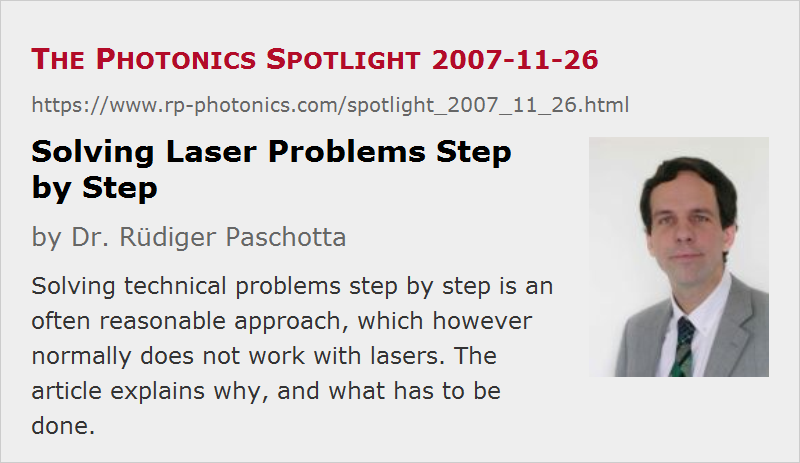

Solving Laser Problems Step by Step
Posted on 2007-11-26 as a part of the Photonics Spotlight (available as e-mail newsletter!)
Permanent link: https://www.rp-photonics.com/spotlight_2007_11_26.html
Author: Dr. Rüdiger Paschotta, RP Photonics Consulting GmbH
Abstract: Solving technical problems step by step is an often reasonable approach, which however normally does not work with lasers. The article explains why, and what has to be done.

Ref.: encyclopedia articles on laser development and laser design
It is a very common and often quite reasonable approach to solve problems e.g. in a development project step by step. You don't try to fix everything in one go, but rather identify and solve one problem, then turn to the next one, etc. This often works fine – except with lasers.
The problem with lasers is essentially that various physical aspects are coupled to each other in rather complicated ways, so that changing one aspect usually has multiple consequences – normally a desired one plus various side effects. Obviously, a step-by-step approach must fail if on average each measure introduces at least one additional side effect… Imagine a car which behaves like a laser. You repair the left door and then find that this affected the gear. There is a fix to the gear, but this causes the rear lamps to fall off. As you reinstall those, the engine won't start. Fortunately, cars normally don't behave like lasers.
Isn't that exaggerated, some readers may wonder. Not that much, I claim. To see this, let us consider a Q-switched laser. For an illustration, distribute the following terms on a sheet of paper: laser crystal, pump intensity, resonator design, thermal lensing, threshold pump power, alignment sensitivity, pulse duration, effective mode area in the laser crystal and Q switch, beam quality, gain, switching speed, laser-induced breakdown on laser mirrors, pulse instabilities. Now draw an arrow for each cause/effect relation, e.g. from resonator design to effective mode area. You will easily end up with a rather involved diagram, even though we consider only some selection of aspects and have dropped essential others. It is easy to recognize that most changes to any aspect will have more than one effect on the overall performance, and it is unlikely that a step-by-step approach leads to a good result without taking many iterations.
Fortunately, there are solutions. While design iterations can hardly be avoided, except in trivial cases, there are different ways of testing, identifying and solving problems. One key point is to do as many of the required iterations as possible on the desk, rather than in the lab. This is much more efficient in terms of money and time, because it is just too tedious and time-consuming to set up a laser according to a faulty design, to identify and correctly understand occurring problems, to implement changes, etc. Ideally, such work is done by a technical expert who is familiar both with all essential aspects of laser physics and with the typical trade-offs. He knows from the beginning what to look for, and the first prototype will have good chances to work properly.
This article is a posting of the Photonics Spotlight, authored by Dr. Rüdiger Paschotta. You may link to this page and cite it, because its location is permanent. See also the RP Photonics Encyclopedia.
Note that you can also receive the articles in the form of a newsletter or with an RSS feed.
Questions and Comments from Users
Here you can submit questions and comments. As far as they get accepted by the author, they will appear above this paragraph together with the author’s answer. The author will decide on acceptance based on certain criteria. Essentially, the issue must be of sufficiently broad interest.
Please do not enter personal data here; we would otherwise delete it soon. (See also our privacy declaration.) If you wish to receive personal feedback or consultancy from the author, please contact him e.g. via e-mail.
By submitting the information, you give your consent to the potential publication of your inputs on our website according to our rules. (If you later retract your consent, we will delete those inputs.) As your inputs are first reviewed by the author, they may be published with some delay.
|  |
If you like this page, please share the link with your friends and colleagues, e.g. via social media:
These sharing buttons are implemented in a privacy-friendly way!